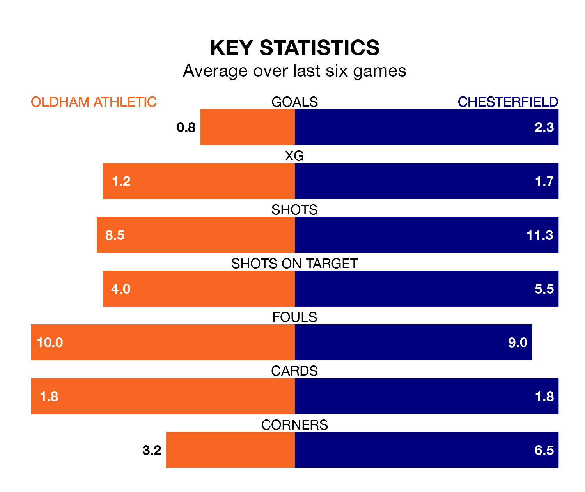

Chesterfield are strong favourites to take all three points despite Oldham Athletic's home advantage in Saturday lunchtime's match at Boundary Park.
*Betting Company* are offering odds of 1.8 on Chesterfield sealing the win, with the visitors sitting first in the National League table.
Oldham, who are ninth in the league and 33 points behind the Spireites, are priced at 3.75 to win. A draw is set at 3.7.
With 93 goals in 38 games so far this season, Chesterfield are the league's highest scorers with 2.4 goals per game. And they are conceding fewer than average, letting in 49 goals at a rate of 1.3 per game.
Oldham, meanwhile, are below average scorers, with 1.4 goals per game, compared to a league average of 1.5. They have conceded 1.3 goals per game.
In the last 10 years, Oldham and Chesterfield have played each other on nine occasions. Oldham won four of them, Chesterfield one, and they drew four times.
On average, the Latics scored 0.8 goals and the Spireites 0.6 in those matches.
Their last meeting was on August 19, when they played out a 1-1 draw.
Athletic are in disappointing form in the National League, with one win and three draws from their last six games.
With three wins and a draw over that period, the Spireites's form is better – they have taken 10 points from 18, compared to the Latics' six.
Oldham's last match was on Saturday, a 2-0 loss against Aldershot Town.
Chesterfield beat Oxford City 2-0 last time out, on Tuesday, with Tom Naylor and Will Grigg on the scoresheet.
Updated: 15:10 (UTC), 15/03/24